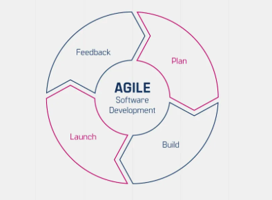

개발자로서의 경력을 쌓아 나가는 데 있어, 기술적 역량 못지않게 중요한 것이 바로 팀 조직과 개발 프로세스에 대한 경험입니다. 이는 개발자의 성장에 있어 결정적인 역할을 합니다.

우선, 애자일 프로세스는 팀이 유연하고 적응력 있게 일할 수 있도록 도와줍니다. 고객 요구사항의 변화에 신속히 대응하고, 짧은 주기로 작동 가능한 소프트웨어를 제공하는 것이 핵심입니다. 짝 프로그래밍은 두 명의 개발자가 한 컴퓨터에서 함께 작업하는 방식으로, 실시간 코드 리뷰와 지식 공유가 이루어집니다. 이는 코드 품질 향상과 팀워크 강화에 큰 도움이 됩니다.
린 소프트웨어 개발은 낭비를 최소화하고 가치 창출에 집중하는 방법론입니다. 불필요한 기능이나 문서 작업을 줄이고, 지속적인 개선을 추구합니다. 지속적 통합(Continuous Integration, CI)은 개발자들이 자주 코드를 통합하고, 자동화된 빌드와 테스트를 수행하는 것을 의미합니다. 이를 통해 통합 과정에서 발생하는 문제를 조기에 발견하고 해결할 수 있습니다.
품질관리는 소프트웨어의 품질을 보장하기 위한 다양한 활동을 포함합니다. 코드 리뷰, 정적 분석, 테스트 자동화 등이 대표적인 예입니다. 리팩토링은 코드의 외부 동작은 유지하면서 내부 구조를 개선하는 작업입니다. 이를 통해 코드의 가독성, 유지보수성, 확장성을 높일 수 있습니다. 유지보수는 이미 배포된 소프트웨어의 버그를 수정하고, 새로운 요구사항을 반영하는 작업을 의미합니다.
자동화된 배포는 소프트웨어를 수동으로 배포하는 대신, 스크립트나 도구를 사용하여 자동화하는 것을 말합니다. 이는 배포 과정의 효율성과 안정성을 높이는 데 도움이 됩니다. 개인 개발 도구 생성 경험은 개발자가 자신의 업무를 자동화하고 최적화할 수 있는 도구를 직접 만들어 보는 것을 의미합니다. 이를 통해 개발 생산성을 높이고, 문제 해결 능력을 기를 수 있습니다.
소통, 협업, 문화 조성, 조직 변화 주도 등은 개발자가 팀과 조직 내에서 원활히 일할 수 있는 기반을 마련해 줍니다. 코드 리뷰는 동료 개발자들이 서로의 코드를 검토하고 피드백을 제공하는 과정입니다. 이를 통해 코드 품질을 높이고, 개발자 간의 지식 공유가 이루어집니다.
마지막으로, 단위 테스트는 개별 코드 단위(함수, 메서드 등)가 의도대로 동작하는지 확인하는 것입니다. JUnit과 같은 테스팅 프레임워크를 활용하여 자동화된 테스트를 작성하고 실행할 수 있습니다. 이는 회귀 버그를 방지하고, 리팩토링을 안전하게 수행할 수 있게 해줍니다.
이러한 다양한 경험들은 개발자로서의 역량을 한층 더 높여줍니다. 단순히 코드를 작성하는 것을 넘어, 개발 프로세스 전반에 대한 이해와 팀 협업 능력을 기를 수 있기 때문입니다. 이는 개발자의 경력 개발에 있어 매우 중요한 자산이 될 것입니다.